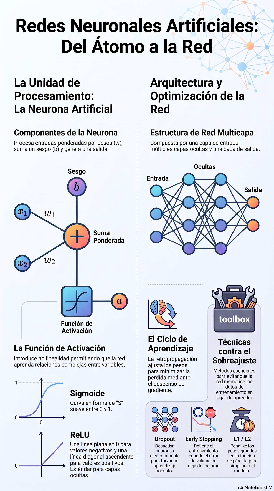

sigmoide <- function(z) {
1 / (1 + exp(-z))
}
x <- c(0.8, 0.4)
w <- c(1.2, -0.7)
b <- 0.1
z <- sum(x * w) + b
salida <- sigmoide(z)
z[1] 0.78salida[1] 0.6856801Al finalizar este capítulo podrás:
neuralnet;keras;Las redes neuronales artificiales son modelos computacionales inspirados, de forma muy simplificada, en la manera en que las neuronas biológicas reciben, transforman y transmiten señales.
Una red neuronal puede aprender relaciones complejas entre variables de entrada y una variable de respuesta. Esto la hace útil para:
La idea central es construir muchas unidades simples, llamadas neuronas artificiales, conectadas entre sí mediante pesos ajustables.
Una neurona recibe varias entradas:
\[ x_1,x_2,\ldots,x_p \]
Cada entrada tiene un peso:
\[ w_1,w_2,\ldots,w_p \]
La neurona calcula una combinación lineal:
\[ z=w_1x_1+w_2x_2+\cdots+w_px_p+b \]
donde \(b\) es el sesgo.
Después aplica una función de activación:
\[ a=f(z) \]
El resultado \(a\) se transmite a otras neuronas o se utiliza como salida.
Supongamos que las entradas, los pesos y el sesgo son:
\[ \begin{aligned} x_1 &= 0.8, & x_2 &= 0.4,\\ w_1 &= 1.2, & w_2 &= -0.7, & b &= 0.1. \end{aligned} \]
La combinación lineal se obtiene sustituyendo los valores:
\[ \begin{aligned} z &= w_1x_1+w_2x_2+b\\ &= (1.2)(0.8)+(-0.7)(0.4)+0.1\\ &= 0.96-0.28+0.1\\ &= 0.78. \end{aligned} \]
Si usamos la función sigmoide:
\[ \sigma(z)=\frac{1}{1+e^{-z}} \]
obtenemos:
\[ \sigma(0.78)\approx0.686 \]
La neurona produce una salida cercana a 0.686.
Las funciones de activación permiten que la red represente relaciones no lineales.
\[ f(z)= \begin{cases} 1, & z\geq0\\ 0, & z<0 \end{cases} \]
Fue utilizada en los primeros perceptrones.
\[ \sigma(z)=\frac{1}{1+e^{-z}} \]
Características:
\[ \tanh(z)=\frac{e^z-e^{-z}}{e^z+e^{-z}} \]
Produce valores entre -1 y 1.
\[ \operatorname{ReLU}(z)=\max(0,z) \]
Es una de las activaciones más utilizadas en capas ocultas.
Para clasificación multiclase:
\[ P(y=k)=\frac{e^{z_k}}{\sum_{j=1}^{K}e^{z_j}} \]
Convierte las salidas en probabilidades que suman 1.
El perceptrón es uno de los modelos neuronales más sencillos.
Calcula:
\[ \widehat{y}=f(\mathbf{w}^{T}\mathbf{x}+b) \]
y actualiza los pesos cuando comete errores.
La regla básica de actualización es:
\[ w_j^{nuevo}=w_j^{anterior}+\eta(y-\widehat{y})x_j \]
donde:
Un perceptrón simple solo resuelve problemas linealmente separables. El problema XOR es el ejemplo clásico que requiere una capa oculta.
Una red neuronal multicapa suele tener:
Cada neurona de una capa puede conectarse con las neuronas de la siguiente.
Recibe las variables predictoras.
Aprenden combinaciones intermedias de las características.
Produce la predicción final.
Ejemplos:
La propagación hacia adelante calcula la salida de la red a partir de las entradas.
Para una capa oculta:
\[ \mathbf{h}=f(\mathbf{W}^{(1)}\mathbf{x}+\mathbf{b}^{(1)}) \]
Para la salida:
\[ \widehat{\mathbf{y}}=g(\mathbf{W}^{(2)}\mathbf{h}+\mathbf{b}^{(2)}) \]
La red transforma sucesivamente la información hasta producir una predicción.
La función de pérdida mide qué tan lejos está la predicción del valor real.
\[ MSE=\frac{1}{n}\sum_{i=1}^{n}(y_i-\widehat{y}_i)^2 \]
Se usa principalmente en regresión.
\[ L=-\frac{1}{n}\sum_{i=1}^{n} \left[ y_i\log(\widehat{p}_i) +(1-y_i)\log(1-\widehat{p}_i) \right] \]
Se utiliza en clasificación binaria.
\[ L=-\frac{1}{n}\sum_{i=1}^{n}\sum_{k=1}^{K} y_{ik}\log(\widehat{p}_{ik}) \]
Se utiliza en clasificación multiclase.
El entrenamiento busca valores de los pesos que minimicen la pérdida.
La actualización general es:
\[ w^{\mathrm{nuevo}} = w^{\mathrm{anterior}} - \eta\frac{\partial L}{\partial w} \]
donde \(\eta\) es la tasa de aprendizaje.
La retropropagación calcula cómo contribuye cada peso al error.
El proceso es:
La retropropagación no es un modelo distinto, sino el mecanismo principal para entrenar redes multicapa.
sigmoide <- function(z) {
1 / (1 + exp(-z))
}
x <- c(0.8, 0.4)
w <- c(1.2, -0.7)
b <- 0.1
z <- sum(x * w) + b
salida <- sigmoide(z)
z[1] 0.78salida[1] 0.6856801El siguiente laboratorio se ejecuta directamente en tu navegador mediante Shinylive. No requiere un servidor Shiny externo.
Puedes modificar las entradas, los pesos, el sesgo, la función de activación y el umbral de clasificación.
#| '!! shinylive warning !!': |
#| shinylive does not work in self-contained HTML documents.
#| Please set `embed-resources: false` in your metadata.
#| standalone: true
#| viewerHeight: 720
#| components: [viewer]
library(shiny)
sigmoide <- function(z) 1 / (1 + exp(-z))
relu <- function(z) pmax(0, z)
app_ui <- fluidPage(
tags$style(HTML("\n body { background-color: #f7f9fc; }\n .well { background-color: white; border-radius: 12px; border: 1px solid #d9e2ef; }\n .resultado-grande { font-size: 1.25rem; font-weight: 700; padding: 12px; border-radius: 10px; background: #eef5ff; margin-bottom: 10px; }\n ")),
titlePanel("Laboratorio interactivo: neurona artificial"),
sidebarLayout(
sidebarPanel(
sliderInput("x1", "Entrada x1", -5, 5, 0.8, 0.1),
sliderInput("x2", "Entrada x2", -5, 5, 0.4, 0.1),
sliderInput("w1", "Peso w1", -5, 5, 1.2, 0.1),
sliderInput("w2", "Peso w2", -5, 5, -0.7, 0.1),
sliderInput("b", "Sesgo b", -5, 5, 0.1, 0.1),
selectInput(
"activacion",
"Función de activación",
choices = c(
"Sigmoide" = "sigmoide",
"Tangente hiperbólica" = "tanh",
"ReLU" = "relu",
"Escalón" = "escalon",
"Lineal" = "lineal"
)
),
sliderInput("umbral", "Umbral de clasificación", 0, 1, 0.5, 0.05)
),
mainPanel(
div(class = "resultado-grande", textOutput("formula")),
fluidRow(
column(4, h4("Combinación lineal"), verbatimTextOutput("z")),
column(4, h4("Salida activada"), verbatimTextOutput("salida")),
column(4, h4("Clase predicha"), verbatimTextOutput("clase"))
),
hr(),
plotOutput("grafica", height = "340px"),
hr(),
h4("Interpretación"),
textOutput("interpretacion")
)
)
)
server <- function(input, output, session) {
z_reactivo <- reactive({
input$w1 * input$x1 + input$w2 * input$x2 + input$b
})
salida_reactiva <- reactive({
z <- z_reactivo()
switch(
input$activacion,
sigmoide = sigmoide(z),
tanh = tanh(z),
relu = relu(z),
escalon = ifelse(z >= 0, 1, 0),
lineal = z
)
})
output$formula <- renderText({
paste0(
"z = (", round(input$w1, 2), ")(", round(input$x1, 2), ") + (",
round(input$w2, 2), ")(", round(input$x2, 2), ") + ", round(input$b, 2)
)
})
output$z <- renderText(round(z_reactivo(), 5))
output$salida <- renderText(round(salida_reactiva(), 5))
output$clase <- renderText({
salida <- salida_reactiva()
if (input$activacion %in% c("sigmoide", "escalon")) {
ifelse(salida >= input$umbral, "Clase 1", "Clase 0")
} else {
ifelse(salida >= 0, "Clase positiva", "Clase negativa")
}
})
output$grafica <- renderPlot({
valores_z <- seq(-6, 6, length.out = 400)
valores_y <- switch(
input$activacion,
sigmoide = sigmoide(valores_z),
tanh = tanh(valores_z),
relu = relu(valores_z),
escalon = ifelse(valores_z >= 0, 1, 0),
lineal = valores_z
)
plot(
valores_z, valores_y, type = "l", lwd = 3,
xlab = "Valor de z", ylab = "Salida de la activación",
main = paste("Función de activación:", input$activacion)
)
grid()
points(z_reactivo(), salida_reactiva(), pch = 19, cex = 1.8)
abline(v = z_reactivo(), lty = 2)
})
output$interpretacion <- renderText({
paste0(
"Con los valores actuales, la neurona calcula z = ",
round(z_reactivo(), 4),
" y produce una salida de ",
round(salida_reactiva(), 4),
". Cambia un peso, una entrada o el sesgo para observar la respuesta."
)
})
}
shinyApp(app_ui, server)entrenar_perceptron <- function(X, y,
eta = 0.1,
epocas = 100) {
X <- as.matrix(X)
y <- as.numeric(y)
pesos <- rep(0, ncol(X))
sesgo <- 0
for (epoca in seq_len(epocas)) {
for (i in seq_len(nrow(X))) {
z <- sum(X[i, ] * pesos) + sesgo
pred <- ifelse(z >= 0, 1, 0)
error <- y[i] - pred
pesos <- pesos + eta * error * X[i, ]
sesgo <- sesgo + eta * error
}
}
list(
pesos = pesos,
sesgo = sesgo
)
}Ejemplo con la compuerta AND:
X_and <- data.frame(
x1 = c(0, 0, 1, 1),
x2 = c(0, 1, 0, 1)
)
y_and <- c(0, 0, 0, 1)
modelo_and <- entrenar_perceptron(
X_and,
y_and,
eta = 0.1,
epocas = 20
)
modelo_and$pesos
x1 x2
0.2 0.1
$sesgo
[1] -0.2Función de predicción:
predecir_perceptron <- function(modelo, X) {
X <- as.matrix(X)
z <- as.numeric(
X %*% modelo$pesos +
modelo$sesgo
)
ifelse(z >= 0, 1, 0)
}
predecir_perceptron(
modelo_and,
X_and
)[1] 0 0 0 1La compuerta XOR produce:
| \(x_1\) | \(x_2\) | XOR |
|---|---|---|
| 0 | 0 | 0 |
| 0 | 1 | 1 |
| 1 | 0 | 1 |
| 1 | 1 | 0 |
No puede resolverse mediante una sola frontera lineal. Una capa oculta permite construir regiones más complejas.
Antes de entrenar una red neuronal es recomendable:
Las redes suelen entrenarse mejor cuando las variables tienen escalas comparables.
\[ z=\frac{x-\bar{x}}{s} \]
\[ x^\ast=\frac{x-\min(x)}{\max(x)-\min(x)} \]
Los parámetros deben calcularse solo con entrenamiento.
set.seed(123)
indice <- sample(
seq_len(nrow(iris)),
size = round(0.70 * nrow(iris))
)
train <- iris[indice, ]
test <- iris[-indice, ]
medias <- sapply(train[, 1:4], mean)
desvios <- sapply(train[, 1:4], sd)
x_train <- scale(
train[, 1:4],
center = medias,
scale = desvios
)
x_test <- scale(
test[, 1:4],
center = medias,
scale = desvios
)Para que la generación del libro sea estable, los bloques que entrenan la red con neuralnet se muestran, pero no se ejecutan automáticamente durante el renderizado. Puedes ejecutarlos en RStudio después de instalar el paquete con PREPARAR_PAQUETES_RED_NEURONAL.bat.
Crearemos un problema con dos especies de iris.
iris_bin <- subset(
iris,
Species != "setosa"
)
iris_bin$clase <- ifelse(
iris_bin$Species == "virginica",
1,
0
)
iris_bin$Species <- NULLDivisión:
set.seed(321)
idx <- sample(
seq_len(nrow(iris_bin)),
size = round(0.70 * nrow(iris_bin))
)
train_bin <- iris_bin[idx, ]
test_bin <- iris_bin[-idx, ]Normalización segura:
variables <- setdiff(
names(train_bin),
"clase"
)
medias_bin <- sapply(
train_bin[, variables],
mean
)
desvios_bin <- sapply(
train_bin[, variables],
sd
)
train_bin[, variables] <- scale(
train_bin[, variables],
center = medias_bin,
scale = desvios_bin
)
test_bin[, variables] <- scale(
test_bin[, variables],
center = medias_bin,
scale = desvios_bin
)Entrenamiento:
# Instalar una sola vez fuera del renderizado:
# install.packages("neuralnet", repos = "https://cloud.r-project.org")
if (!requireNamespace("neuralnet", quietly = TRUE)) {
stop(
"El paquete 'neuralnet' no está instalado. ",
"Ejecute PREPARAR_PAQUETES_RED_NEURONAL.bat."
)
}
formula_rna <- clase ~ .
modelo_rna <- neuralnet::neuralnet(
formula = formula_rna,
data = train_bin,
hidden = c(5, 3),
linear.output = FALSE,
lifesign = "minimal",
stepmax = 1e6
)
modelo_rnaprobabilidades <- neuralnet::compute(
modelo_rna,
test_bin[, variables]
)$net.result
prediccion <- ifelse(
probabilidades >= 0.5,
1,
0
)
matriz <- table(
Real = test_bin$clase,
Predicho = prediccion
)
matrizmetricas_binarias <- function(real, predicho) {
vp <- sum(real == 1 & predicho == 1)
vn <- sum(real == 0 & predicho == 0)
fp <- sum(real == 0 & predicho == 1)
fn <- sum(real == 1 & predicho == 0)
data.frame(
exactitud = (vp + vn) /
(vp + vn + fp + fn),
sensibilidad = ifelse(
vp + fn == 0,
NA,
vp / (vp + fn)
),
especificidad = ifelse(
vn + fp == 0,
NA,
vn / (vn + fp)
),
precision = ifelse(
vp + fp == 0,
NA,
vp / (vp + fp)
)
)
}
metricas_binarias(
test_bin$clase,
prediccion
)El umbral 0.5 no siempre es el mejor.
umbrales <- seq(0.10, 0.90, by = 0.05)
resultados_umbral <- data.frame(
umbral = umbrales,
exactitud = NA_real_,
sensibilidad = NA_real_,
especificidad = NA_real_
)
for (i in seq_along(umbrales)) {
pred_i <- ifelse(
probabilidades >= umbrales[i],
1,
0
)
met <- metricas_binarias(
test_bin$clase,
pred_i
)
resultados_umbral[i, 2:4] <- met[
c(
"exactitud",
"sensibilidad",
"especificidad"
)
]
}
resultados_umbralEste laboratorio representa gráficamente una arquitectura similar a la que se especifica con el argumento hidden de neuralnet. Modifica el número de neuronas de las capas ocultas y observa cómo cambian la topología y el número de conexiones.
#| '!! shinylive warning !!': |
#| shinylive does not work in self-contained HTML documents.
#| Please set `embed-resources: false` in your metadata.
#| standalone: true
#| viewerHeight: 760
#| components: [viewer]
library(shiny)
dibujar_red <- function(n_entrada, h1, h2, n_salida) {
capas <- c(n_entrada, h1)
nombres <- c("Entrada", "Oculta 1")
if (h2 > 0) {
capas <- c(capas, h2)
nombres <- c(nombres, "Oculta 2")
}
capas <- c(capas, n_salida)
nombres <- c(nombres, "Salida")
xcapas <- seq(0.08, 0.92, length.out = length(capas))
posiciones <- vector("list", length(capas))
plot(
0, 0,
type = "n",
xlim = c(0, 1),
ylim = c(0, 1),
axes = FALSE,
xlab = "",
ylab = "",
main = "Arquitectura de la red neuronal"
)
for (j in seq_along(capas)) {
y <- seq(0.15, 0.85, length.out = capas[j])
posiciones[[j]] <- cbind(xcapas[j], y)
}
for (j in seq_len(length(capas) - 1)) {
desde <- posiciones[[j]]
hacia <- posiciones[[j + 1]]
for (a in seq_len(nrow(desde))) {
for (b in seq_len(nrow(hacia))) {
segments(
desde[a, 1], desde[a, 2],
hacia[b, 1], hacia[b, 2],
col = "gray70"
)
}
}
}
for (j in seq_along(posiciones)) {
puntos <- posiciones[[j]]
symbols(
puntos[, 1],
puntos[, 2],
circles = rep(0.025, nrow(puntos)),
inches = FALSE,
add = TRUE,
bg = "white",
fg = "black"
)
text(
xcapas[j],
0.96,
nombres[j],
font = 2
)
}
}
ui <- fluidPage(
titlePanel("Visualizador interactivo de una red neuronal"),
sidebarLayout(
sidebarPanel(
sliderInput(
"entradas",
"Número de variables de entrada",
min = 2,
max = 6,
value = 4,
step = 1
),
sliderInput(
"h1",
"Neuronas en la primera capa oculta",
min = 1,
max = 10,
value = 5,
step = 1
),
sliderInput(
"h2",
"Neuronas en la segunda capa oculta",
min = 0,
max = 8,
value = 3,
step = 1
),
sliderInput(
"salidas",
"Neuronas de salida",
min = 1,
max = 4,
value = 1,
step = 1
)
),
mainPanel(
plotOutput("red", height = "520px"),
h4("Configuración equivalente en neuralnet"),
verbatimTextOutput("codigo"),
h4("Resumen"),
textOutput("resumen")
)
)
)
server <- function(input, output, session) {
output$red <- renderPlot({
dibujar_red(
input$entradas,
input$h1,
input$h2,
input$salidas
)
})
output$codigo <- renderText({
hidden <- if (input$h2 == 0) {
as.character(input$h1)
} else {
paste0("c(", input$h1, ", ", input$h2, ")")
}
paste0(
"modelo <- neuralnet(\n",
" formula = clase ~ .,\n",
" data = train,\n",
" hidden = ", hidden, ",\n",
" linear.output = FALSE\n",
")\n\n",
"plot(modelo)"
)
})
output$resumen <- renderText({
capas <- if (input$h2 == 0) 3 else 4
conexiones <- input$entradas * input$h1
if (input$h2 == 0) {
conexiones <- conexiones +
input$h1 * input$salidas
} else {
conexiones <- conexiones +
input$h1 * input$h2 +
input$h2 * input$salidas
}
paste0(
"La arquitectura tiene ",
capas,
" capas y aproximadamente ",
conexiones,
" conexiones entre neuronas, sin contar los sesgos."
)
})
}
shinyApp(ui, server)El visualizador no entrena el modelo dentro del navegador. Su propósito es mostrar la arquitectura definida mediante hidden. Cuando ejecutes plot(modelo_rna) en RStudio, neuralnet dibujará además los pesos y sesgos aprendidos.
Una arquitectura se define por:
No existe una arquitectura universal.
Puede producir subajuste.
Puede memorizar entrenamiento y sobreajustar.
Una estrategia razonable es comenzar con una red pequeña y aumentar complejidad gradualmente.
Una época representa una pasada completa por entrenamiento.
Un lote es un subconjunto utilizado para calcular una actualización.
Usa todo el conjunto.
Actualiza con una observación.
Usa pequeños grupos y es la opción más común.
Entre los más conocidos se encuentran:
Una red sobreajustada obtiene:
Señales:
Agrega una penalización:
\[ L_{total}=L+\lambda\sum_j w_j^2 \]
\[ L_{total}=L+\lambda\sum_j |w_j| \]
Desactiva aleatoriamente una proporción de neuronas durante el entrenamiento.
Detiene el entrenamiento cuando la validación deja de mejorar.
El paquete keras permite construir redes utilizando una interfaz de alto nivel.
La instalación de keras y su motor puede variar según el equipo. Conviene ejecutar este ejemplo en un entorno configurado o en Google Colab.
library(keras)
x_train_keras <- as.matrix(x_train)
x_test_keras <- as.matrix(x_test)
y_train_keras <- as.integer(
train$Species
) - 1
y_test_keras <- as.integer(
test$Species
) - 1Modelo:
modelo_keras <- keras_model_sequential() |>
layer_dense(
units = 16,
activation = "relu",
input_shape = ncol(x_train_keras)
) |>
layer_dropout(rate = 0.20) |>
layer_dense(
units = 8,
activation = "relu"
) |>
layer_dense(
units = 3,
activation = "softmax"
)Compilación:
modelo_keras |>
compile(
optimizer = "adam",
loss = "sparse_categorical_crossentropy",
metrics = "accuracy"
)Entrenamiento:
historia <- modelo_keras |>
fit(
x = x_train_keras,
y = y_train_keras,
epochs = 100,
batch_size = 16,
validation_split = 0.20,
verbose = 0
)Evaluación:
modelo_keras |>
evaluate(
x_test_keras,
y_test_keras,
verbose = 0
)Las curvas de pérdida y exactitud ayudan a diagnosticar el entrenamiento.
plot(historia)Debe compararse:
En un problema con \(K\) clases:
\[ \widehat{y}= \arg\max_k P(y=k\mid\mathbf{x}) \]
Para clasificación multiclase pueden emplearse:
Ejemplo one-hot:
| Clase | Neurona 1 | Neurona 2 | Neurona 3 |
|---|---|---|---|
| A | 1 | 0 | 0 |
| B | 0 | 1 | 0 |
| C | 0 | 0 | 1 |
Todos los pesos no deben comenzar con el mismo valor, porque las neuronas aprenderían exactamente lo mismo.
Las inicializaciones modernas buscan:
En redes profundas, los gradientes pueden:
Consecuencias:
Soluciones comunes:
Para reproducir resultados:
set.seed(2026)Las redes neuronales suelen considerarse menos interpretables que:
Herramientas posibles:
La interpretación debe acompañarse de validación y conocimiento del dominio.
Ejemplo: clasificar pacientes según riesgo de enfermedad.
Variables:
Respuesta:
Debe prestarse especial atención a:
Ejemplo: clasificar niveles de contaminación.
Variables:
Respuesta:
La red puede capturar relaciones no lineales, pero debe compararse con modelos más simples.
| Aspecto | Red neuronal | Regresión logística | Árbol | Random Forest |
|---|---|---|---|---|
| No linealidad | Alta | Limitada | Alta | Alta |
| Interpretación | Baja | Alta | Alta | Media |
| Preparación | Alta | Media | Media | Media |
| Escalamiento | Importante | Recomendable | Poco importante | Poco importante |
| Datos requeridos | Frecuentemente muchos | Menos | Moderados | Moderados |
| Costo | Puede ser alto | Bajo | Bajo | Moderado |
Utiliza iris para clasificación multiclase.
Calcula manualmente la salida de una neurona sigmoide.
Programa una neurona ReLU en R.
Entrena un perceptrón para la compuerta OR.
Explica por qué XOR requiere una capa oculta.
Entrena una red binaria con neuralnet.
Compara arquitecturas hidden = 3, hidden = 5 y hidden = c(5,3).
Modifica el umbral de clasificación y analiza sensibilidad y especificidad.
Construye una red multiclase con keras.
Compara la red con regresión logística.
Describe tres medidas para reducir sobreajuste.
| Recurso | Descripción | Abrir o descargar |
|---|---|---|
| Presentación en PDF | Síntesis del capítulo para lectura o exposición. | Abrir PDF |
| Presentación editable | Diapositivas en PowerPoint. | Descargar PPTX |
| Infografía | Resumen visual del capítulo. | Abrir infografía |

Los materiales fueron creados con apoyo de NotebookLM de Google a partir del contenido del libro y revisados y adaptados por el autor.
Las redes neuronales artificiales combinan neuronas simples para aprender relaciones complejas.
Sus componentes fundamentales son:
Una red efectiva no depende solamente de aumentar capas o neuronas. También requiere:
En el siguiente capítulo podremos abordar métodos no supervisados, comenzando con agrupamiento k-means.